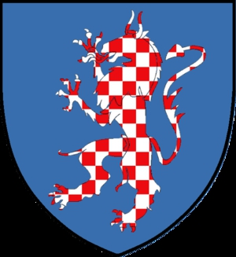

127750772 Niels Ovesen (Panter) til Asdal o Skovgaard
Riddare. Blev ca 71 år.

Född:
omkring 1335 Morsö, Danmark.
Död:
1406 Asdal, Hjörring, Danmark.
Barn med
127750773 Johanne Andersdotter (Stenbrikke) (<1360 - <1419)
Barn:
Anders Nielsen (Panter) (1355? - <1406)
Personhistoria
Årtal
Ålder
Händelse
1335?
Födelse omkring 1335 Morsö, Danmark
1355?
Sonen
63875386 Anders Nielsen (Panter)
föds omkring 1355 Kaersgaard, Hjörring, Danmark
1406
Död 1406 Asdal, Hjörring, Danmark